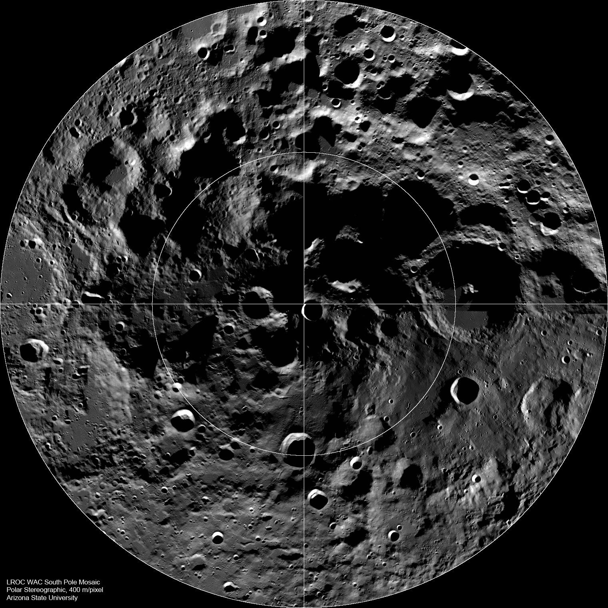
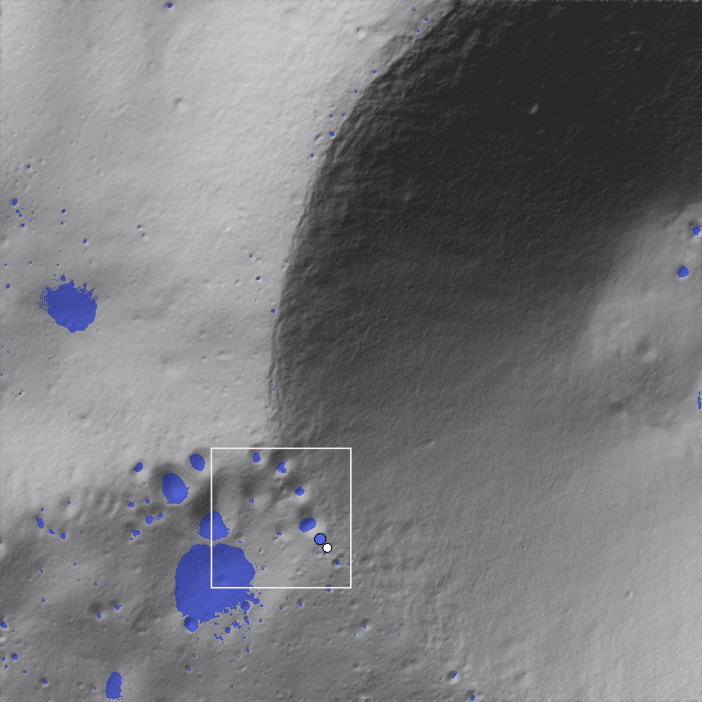

ICEWISEAgua donde nunca sale el Sol.
Un rover autónomo que busca hielo bajo el suelo lunar, decide dónde vale la pena perforar y lo convierte en agua.
Hay hielo en la Luna. Nadie sabe todavía cuánto, ni cómo sacarlo.
Cerca del polo sur, el fondo de muchos cráteres nunca recibe luz solar. A unos −233 °C, el hielo de agua se ha conservado durante miles de millones de años.
Oscuridad
Sin Sol no hay energía solar ni luz para las cámaras.
Incertidumbre
El hielo está repartido en manchas, bajo una capa de polvo seco.
Energía
Con poco hielo, casi toda la energía se gasta en calentar roca.


En el borde del cráter Shackleton.
La colonia ICEWISE se ubica en el borde de Shackleton, a 89,6° de latitud sur, a pocos kilómetros del polo. Es una de las regiones que estudia el programa Artemis.
- Luz solar en el sitio de la estación≈ 83 % del tiempo*
- Distancia a la sombra permanente más cercana≈ 300 m
- Distancia estación – colonia≈ 250 m
- Desnivel en la zona de la misión≈ 800 m
- Temperatura en las sombras permanentes≈ 40 K (−233 °C)
*Calculado por ICEWISE con el relieve real: fracción de direcciones del Sol en las que el horizonte no lo tapa. El interior de Shackleton también está en sombra permanente, pero su borde opuesto queda fuera de este mapa y no lo podemos calcular aquí.
La idea es la misma de todo el proyecto: energía arriba, hielo abajo. En el borde casi siempre da el Sol, así que ahí van la estación y la colonia. A unos cientos de metros, en el fondo de cráteres pequeños, nunca da el Sol, y ahí se conserva el hielo.
Seis pasos, un solo sistema.
Energía en la cresta iluminada, hielo en el fondo oscuro del cráter. El rover va y vuelve entre los dos.
Toma el control de la misión.
Estás en el borde real del cráter Shackleton. Los cristales azules marcan el hielo bajo el suelo: el rover no los ve y tiene que descubrirlos con su sensor.
Complejo habitacional
Sector habitableEl nivel del depósito de este sector sube con el agua que llega de ICEWISE.
Capas
Crecimiento por etapas
Cada etapa solo se aprueba si el agua, el aire, la energía, los repuestos y la evacuación lo permiten.
Investigación UKU PACHA MK-I: superficies, capacidades y blindajes son parámetros conceptuales, no un plano certificado. Haz clic en un módulo de la colonia para ver su ficha.
- WASD
- Mover la cámara · en «Conducir yo», conducir el rover
- ↑↓←→
- Mover la cámara
- Arrastrar · rueda
- Girar la cámara · acercar
- Espacio
- Perforar aquí (conduciendo)
- E
- Elegir a dónde enviar el rover
- M G L C
- Mapa · telemetría · capas · colonia
- X F
- Despiece · pantalla completa
- Pantalla táctil
- Un dedo: desplazar la vista (en 3ª persona, girar) · dos dedos: girar y pellizcar para acercar · flechas en pantalla: mover la cámara
- Dentro de la colonia
- WASD caminar · ←→ girar · Shift correr · Esc salir
Clic en el mapa: añadir un punto de paso · clic derecho: quitar el último. En cada punto el rover mide el hielo y decide si perforar.
Distancias sobre el relieve real (LOLA, 10 m por píxel). El tiempo usa el mismo modelo de velocidad del rover: más lento en subidas de más de 15° e imposible por encima de 24°.
Valores del modelo de la simulación. La comunicación se calcula con la línea de vista sobre el relieve real.
Elige una pieza
Toca una etiqueta o una pieza del rover para ver qué hace.
Diseño propio de ICEWISE (modelo de Blender). La simulación queda en pausa mientras miras el despiece · Esc para salir.
Espacio perforar · ↑↓←→ cámara
Preparando el borde del cráter Shackleton
- Pulsa Iniciar. El rover sale de la estación, en el borde iluminado de Shackleton, hacia los cráteres oscuros.
- Sigue la barra del proceso bajo el visor: perforar → horno → trampa fría → biofiltro → filtros → tanque → colonia.
- Mira los cristales azules: es el hielo real. Los cuadros blancos son lo que el rover va midiendo.
- Mueve los controles de la derecha. El recuadro Qué cambia te explica el efecto con números. En la pestaña Biofiltro verás cómo los microorganismos limpian el agua.
Qué es real y qué es simulado
- Relieve y sombras reales: topografía del borde del cráter Shackleton (LOLA/LRO, NASA, 10 m por píxel), 3,2 km alrededor de la estación. El resto del cráter que se ve a lo lejos es un modelo aproximado, solo para dar contexto.
- Hielo simulado: las sombras permanentes se calculan con el relieve real; el hielo dentro de ellas es simulado.
- Luz: en el polo el Sol está a solo ~1° sobre el horizonte. La «luz de apoyo» ilumina desde arriba únicamente para ver mejor el relieve.
- Cielo real: 62 000 estrellas de mapas de NASA (datos de Gaia e Hipparcos); la Vía Láctea se ve por su densidad, con un velo azul muy tenue (estético). Con «Cielo de larga exposición» se ven como en una foto de exposición larga; desactívalo para verlo como lo vería el ojo con el suelo iluminado.
- La Tierra está hecha con imágenes de satélite de NASA, en su dirección y fase reales vistas desde Shackleton. Con «Vista Tierra» se ve con teleobjetivo, como en las fotos reales.
- Rocas y regolito: escaneos fotográficos (Poly Haven, CC0).
- Perforación: la vista en corte junto a la broca es ilustrativa; el espesor de la capa seca y el porcentaje de hielo son los del modelo en ese punto, y las virutas caen con la gravedad lunar.
- Rover: el despiece muestra el diseño propio del rover. Los datos del mapa y de la telemetría salen del modelo de la simulación.
- Supuestos de diseño: la colonia UKU PACHA MK-I tiene 10 personas (ampliable por etapas) que usan ~2,5 L de agua al día cada una y reciclan el 90 % (necesitan ~2,5 L/día de agua nueva). El rover va a 3,6 km/h (el VIPER de la NASA va a ~0,8 km/h), con un taladro de 300 W y un cargador de 1200 W en la estación. Regenerar el filtro químico en el horno es una hipótesis.
¿Cuánta agua y a qué coste?
Calculadora basada en las propiedades térmicas reales del suelo lunar. Mueve la concentración de hielo y observa cómo cambia todo.
¿En qué se gasta la energía?
Si cambia…
¿Ya existe algo parecido?
Sí, por partes. Ninguno une las mismas piezas que ICEWISE.
LUWEX (Europa, 2023–2025)
Extrajo, capturó y purificó agua de suelo lunar simulado con hielo, en vacío y con hasta 13 kg por prueba. Su cadena de limpieza combinó microfiltración, ósmosis inversa, carbón activado e intercambio iónico. Alcanzó el nivel de madurez 4 (validado en laboratorio). Es lo más cercano a nuestra planta.
Trampas frías y biorreactores
Paragon Space probó que una trampa fría separa el agua de parte de los contaminantes. La NASA ensaya biorreactores de membrana que eliminan amoníaco del agua de las naves con bacterias, la misma idea que nuestro biofiltro.
Nuestro aporte
Unir un rover que busca y decide dónde perforar, la planta de extracción, un biofiltro con organismos resistentes a la radiación y la entrega a una colonia en Shackleton. Todo dentro de un mismo sistema y simulado sobre la topografía real.
Posible hoy
- Rover polar con luces y navegación
- Detección de hidrógeno con neutrones
- Taladro de 1 m (ya construido para vuelo)
- Prototipo escolar completo
Falta investigar
- Cuánto hielo hay realmente y dónde
- Perforar suelo congelado a −233 °C
- Energía dentro de los cráteres oscuros
- Limpiar el agua de amoníaco y mercurio
Concepto
- El ciclo completo en un solo sistema
- Extracción a gran escala
- Biofiltro con microorganismos: hipótesis que se probará en el laboratorio
Un rover de mesa que hace lo mismo, en arena.
ESP32, sensores sencillos y un lecho de arena con zonas húmedas o congeladas. Demuestra el ciclo completo; no imita las condiciones lunares.
Explora
Chasis 4WD con sensor de distancia para esquivar obstáculos.
Detecta
Un sensor de humedad hace de “detector de hielo” sobre la arena.
Perfora
Taladro con motor paso a paso; una balanza pesa la muestra.
Recupera
Calienta la muestra y condensa el vapor en una placa fría.
Conéctalo a esta página
Conecta el ESP32 por USB y pulsa el botón (Chrome o Edge). Sus sensores reales aparecen aquí al instante.
Aquí verás batería, distancia, humedad, temperatura, avance del taladro y masa recolectada.